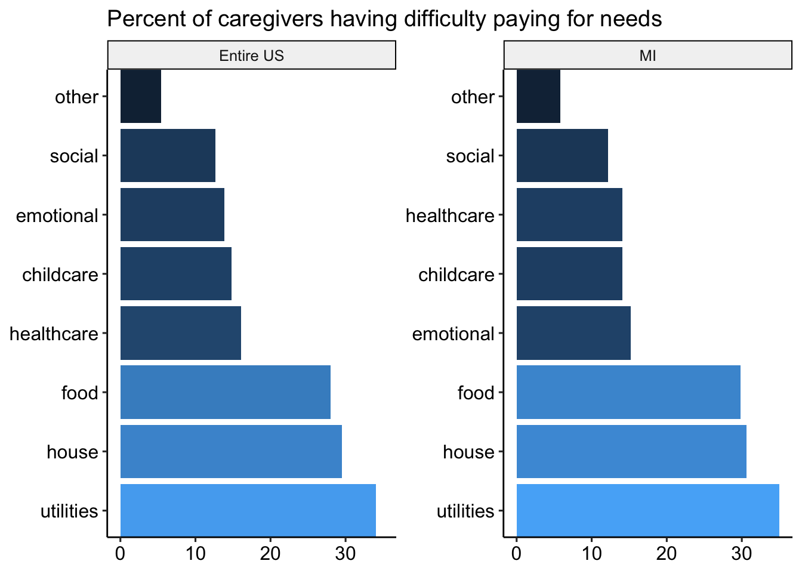

RAPID has sampled 350 caregivers from your state.
Caregivers complete measures of anxiety, depression, stress, and loneliness. These measures are averaged to create a single mental health variable, called “well-being” which ranges from 0 (worst possible mental health) to 100 (best possible mental health).
Caregivers complete measures of child internalizing and externalizing behavior. These measures are averaged to create a single mental health variable, called “well-being” which ranges from 0 (worst possible mental health) to 100 (best possible mental health).
Which needs are hard to pay for?: - Food - Housing - Utilities (electric, water, trash) - Healthcare - Social - Emotional - Childcare - Other
Caregivers grouped into two categories: trouble paying for 1+ basic need, or no trouble paying for any.
